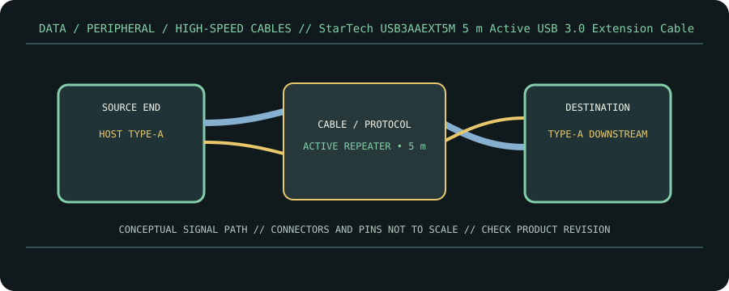

[ CABLE PRODUCT RECORD // STARTECH.COM USB3AAEXT5M ACTIVE EXTENSION CABLE ]
StarTech USB3AAEXT5M 5 m Active USB 3.0 Extension Cable
USB Type-A male ↔ USB Type-A female active extension. This entry documents the named product model, not a universal guarantee for all cables with the same connector.

CLASSIFICATION: Data, peripheral, and high-speed cables. Model-specific facts below are sourced; negotiated operation remains limited by the connected devices.
Interface and capability
| Product / protocol | StarTech.com USB3AAEXT5M active extension cable. USB 3.0 / USB 3.2 Gen 1 SuperSpeed, backward compatible with USB 2.0. |
|---|---|
| Connector type | Upstream Type-A male to downstream Type-A female, with active repeater electronics. StarTech identifies an additional 5 m extension segment. |
| Electrical / length limits | 5 m extension segment; USB 3.0 / USB 3.2 Gen 1 link up to 5 Gb/s when host, downstream cable, and device support it. Manufacturer specifies bus power and an included universal external power adapter for additional power. |
| Revision-specific compatibility | Use as an extension, not a direct A-to-device endpoint cable. Maintain the extension’s intended direction and connect the optional supply when the attached device/port budget requires it. Overall channel length and performance depend on the full cable chain. |
Compatibility & handling
- This is an active host-side extension (male upstream, female downstream), not a passive coupler and not a USB-C adapter.
- Use the included adapter and power arrangement specified by StarTech when bus power alone is insufficient; never exceed host/device power limits.
- Do not infer 5 Gb/s operation from blue plastic or connector fit: the complete host, extension, downstream cable, and peripheral must negotiate SuperSpeed.
Sources & further reading
- StarTech — USB3AAEXT5M 5 m active USB 3.0 extensionModel-specific length, connector arrangement, active extension and power information.
- StarTech.com — USB 3.0 cable products and connector familiesManufacturer cable-family reference for connector and generation selection.
- USB-IF — USB 3.2 Specification Language Usage GuidelinesOfficial USB 3.x generation naming and 5 Gb/s SuperSpeed terminology.
- USB-IF — USB 3.2 Revision 1.1 (June 2022)Normative USB 3.2 family specification reference.